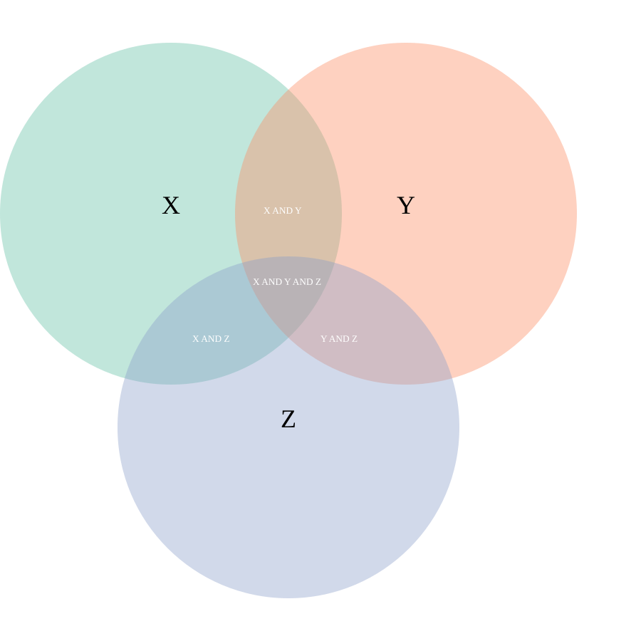
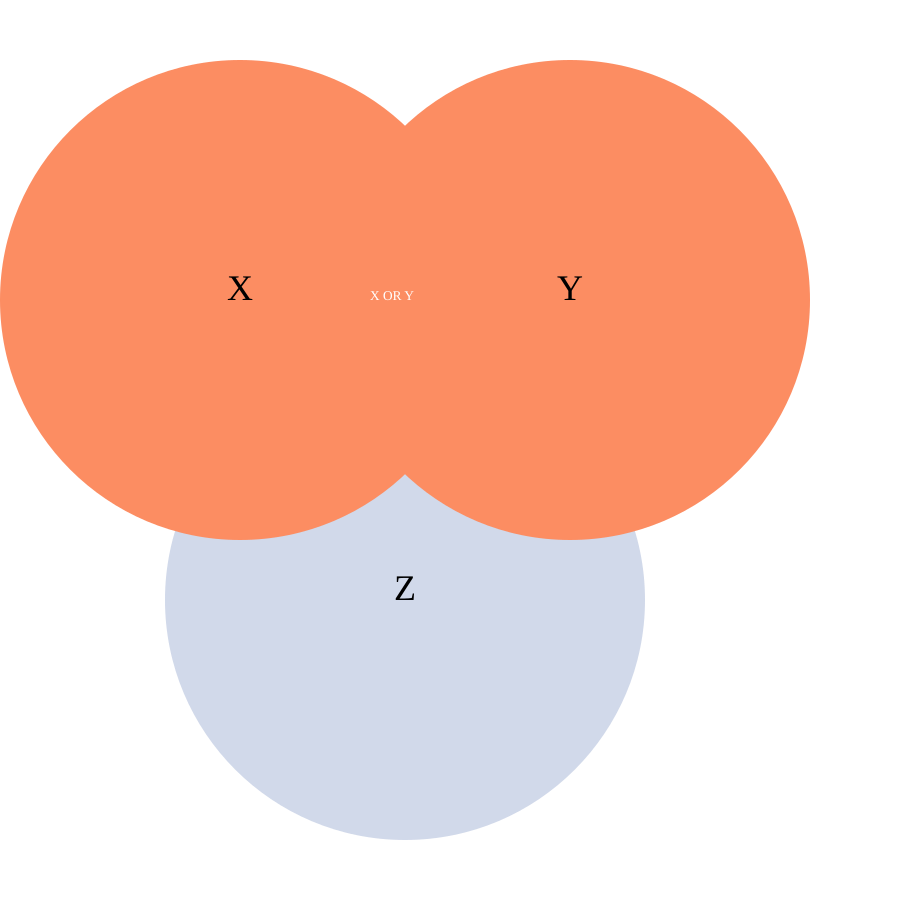
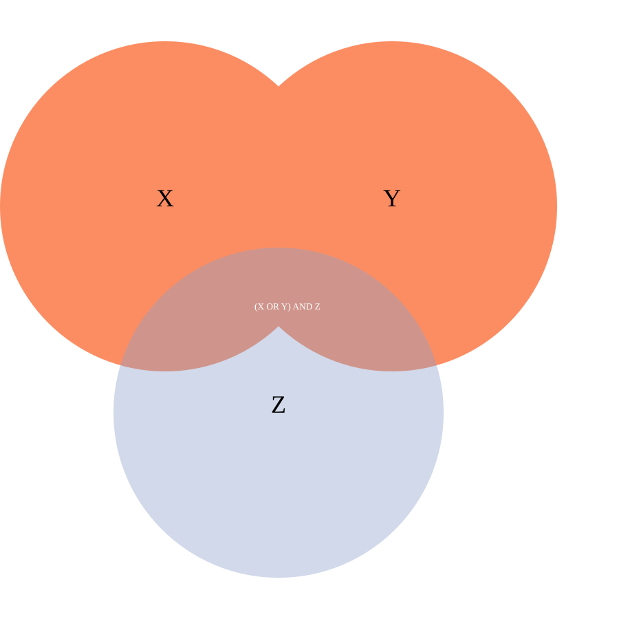

Särskilt om Libris
Det här avsnittet om Libris är under omarbetning och beräknas vara klart i september 2026.
Eftersom Libris i den här kursen ofta ligger i fokus för övningar i informationssökning (searching) är dess databasstruktur av särskild vikt, inte minst för att databsen i flera avseenden avviker från de flesta andra databaser du har använt eller kommer att använda under utbildningen. Det gäller också karaktären på innehållet i Libris: exempelvis förekommer för vissa resurstyper olika typer av titlar som du vanligen inte finner i andra databaser - t ex originaltitel, parallelltitel och uniform titel. Det här tillägget till Marias och Thomas guide motiveras alltså av Libris och dess särart och söker belysa vad som är specifikt för sökning i Libris.
När vi nu skriver år 2026 så har Libris ''kastat ut'' en tidigare databasstruktur (MARC21) och ersatt med en grafstruktur (baserad på RDF och idén om länkad data) — även om Libris fortfarande behöver kunna exportera till MARC21 för de i gemenskapen som fortfarande har system byggda kring MARC21 (som t ex Koha). Det här betyder inte att innehållet i termer av vilka metadata som kan förväntas finnas är annorlunda, annat än med avseende på små detaljer och följderna av en skiftande katalogiseringspraxis. Det är i huvudsak strukturen som är annorlunda, men därmed också hur innehållet kan accessas. Våren 2026 fick detta konsekvensen att Libris ''gamla'' söktjänst stängdes ner och ersattes definitivt av en ny version som i många stycken är annorlunda och fordrar helt andra tillvägagångssätt än tidigare. Båda tjänsterna kan refereras till med benämningen Libris Webbsök men endast den nya versionen finns kvar. Vi kan sannolikt hoppas på och förvänta oss en kompletterande utvidgad dokumentation av hur Libris Webbsök kan användas framöver, liksom att viss funktionalitet förändras över tid. I skrivande stund är dokumentationen dock ganska rudimentär och du behöver ägna en hel del tid åt att bekanta dig med hur den fungerar genom att vara nyfiken och utforska innehållet och dess sökmöjligheter
I följande korta avsnitt redogörs inledningsvis för några teknikaliter som är viktiga att känna till, men inte alltid nödvändiga för att använda Libris.
Teknikaliteter 2026:
I strikt mening finns i Libris inte längre några ''poster'' (eng: records) i den mening vi finner sådana i andra databaser och i bibliotekstaloger baserade på MARC21. Innehållet utgörs av ett monumentalt lager av RDF-trippler som sammanlänkas med identifierare (URIer) för entiteter som beskrivits. Paket med sådana trippler kan i o f sig ligga till grund för en rekonstruktion av ''poster'', vilket också regelbundet sker i interaktionen med Libris. Begreppet ''fält'' kan också sägas rekonstrueras genom de tillrättalagda gränssnitt som möjliggör sökning i Libris.
Det egentliga Libris är alltså en omfattande RDF-graf-struktur där motsvarande entiteter som finns definierade i LRM utgör subjekt som beskrivs. Den stora skillnaden gentemot LRM är dock att Libris adopterat "Bibframe" som fusionerar LRMs verk och uttryck till en reviderad idé om vad som utgör ett verk.
Att söka direkt i originaldatabasen är möjligt, men fordrar kunskaper och färdigheter i att använda SPARQL (Libris SPARQL). Om den kompetensen är för handen så har du ett ännu kraftfullare verktyg för utsökning än Libris Webbsök så som vi ska lära känna det här. Det har funnits och finns flertalet sätt för en systembibliotekarie att extrahera data från Libris (via s k APIer), bl a Xsearch, men sommaren 2026 framstår det som oklart vilka som är igång och vilka som är under utveckling, utöver SPARQL.
I det egentliga Libris (som är resultatet av katalogisering i Libris katalogiseringsverktyg så har du för Nässjö stadsbiblioteks exemplar av Stieg Larssons roman "Män som hatar kvinnor" en beskrivning av exemplaret (https://libris.kb.se/l1dxffl8jmgcdwl6#it) som länkas till en utgåva (manifestation) av verket (verket i Libris mening, inte i LRMs mening). Det här illustrerar hur Libris generar en representation av respektive entitet. Det kan noteras hur den underliggande länken mellan exemplar och manifestation (instans) sommaren 2026 inte genererar en länk i Libris gränssnitt, men finns under ytan:
prefix : <https://id.kb.se/vocab/>
<https://libris.kb.se/l1dxffl8jmgcdwl6#it> a :Item ;
:heldBy <https://libris.kb.se/library/Nass> ;
:itemOf <https://libris.kb.se/r93d9n431nql6c4#it> ;
:shelfMark [ a :ShelfMark ;
:label "Hc" ] .
Innehållet i Libris
Att Libris utgör vår nationalbibliografi (som fram till början av 2000-talet publicerades av Kungliga Biblioteket som "Svensk bokkatalog" och därefter som "Svensk bokförteckning) och därmed förtecknar närapå den totala utgivningen av litteratur i Sverige och på svenska i andra länder inger förstås förtroende. Men det är svårare att dra gränser för vad som eventuellt inte kan finnas förtecknat (beskrivet) där, t ex i fråga om äldre litteratur och vissa typer av litteratur eller andra uttrycksformer (som fonogram). Här finns flertalet faktorer som påverkar vad vi kan förvänta oss att hitta, bl a en genom åren föränderlig pliktexemplarslag, och att det retrospektiva införlivandet av data från de tryckta utgåvorna nämnda ovan sannolikt är långt ifrån fullständigt.
Att Libris också utgör de vetenskapliga bibliotekens accessions- och beståndskatalog sedan lång tid tillbaka, och numer i viss utsträckning även folkbibliotekens, inger också förtroende, men undertecknad (Mikael) känner inte till fullo vilka luckor som kan finnas. Med "accessionskatalog" avses här förteckningen av (lärosätes-)bibliotekens förvärv av utländsk litteratur, vilken tidigare tillverkades och publicerades i tryckt form, bl a som "Sveriges offentliga bibliotek - Accessionskatalog" från slutet av 1800-talet.
Det är dock klart att med avseende på täckningsgrad så finns i och för sig troligen ingen bättre sammanhållen historisk dokumentation över svensk utgivning och universitetsbibliotekens bestånd i Sverige än Libris. En sökning efter beskrivningar av litteratur av bärartyp 'bok' ger nära tio miljoner träffar. När det däremot gäller beskrivningarnas (posternas) fullständighetsgrad och granulariteten i fråga om vad som beskrivs ser vi dock en anmärkningsvärd variation som vi behöver vara medvetna om.
Fullständighetsgrad: Dels kan många beskrivningar sakna uppgifter som vi förväntar oss att finna, såsom förlagsuppgifter och uppgifter om författare när det handlar om utgåvor med fler än tre författare. För senare tiders utgivning kan man (oftast) förvänta sig uppgifter om översättare, originalspråk och originaltitel, men det är mer sällsynt för äldre utgåvor.
Granularitet: I huvudsak förtecknas eller beskrivs inte enskilda häften/nummer som ingår i en tidskrift, eller bidrag i tidskriftsnummer, inte heller verk som ingår i en s k antologi. En sökning efter beskrivningar av litteratur av publikationstypen 'serier' (vilket inkluderar t ex tidskrifter, dagstidningar och rapportserier) gav drygt en halv miljon träffar 2024. Fr o m nya Libris utnyttjas här en s k GenreForm-term för en sådan sökning, på formen workCategory:(seriella publikationer), åtminstone när detta skrivs.
En "tumregel" här kan vara att ju äldre en utgåva är, desto lägre fullständighetsgrad och granularitet kan vi förvänta oss. En faktor att räkna med är också att katalogiseringsregler har förändrats över åren och att enskilda katalogiserande bibliotekarier har haft varierande kompetens och erfarenhet för uppdraget. Ett undantag till tumregeln är riktigt antik litteratur som har varit föremål för texthistorisk beskrivning, som Stiernhielms Herkules.
Libris förtecknar också litteratur som inte finns tillgänglig på svenska bibliotek. Dels finns förhandsinformation från förlagen som registreras med knapphändig metadata, och dels finns beskrivningar importerade från andra nationalbibliotek som ett led i det internationella bibliografiska samarbetet.
Sökning i Libris
Inledning
Även om registrering av (nytillkomna) resursbeskrivningar (katalogisering) i databasen Libris görs genom Libris XLs formulär och genererar ett antal RDF-trippler så är visningsresultatet och de sökmöjligheter som ges beroende av Libris Webbsöks gränssnitt (dess ''frontend'' i samspel med ''backend''). Förutsättningarna för sökning och dess utfall är därmed i många stycken ett ''rörligt mål'' i nuläget. Vi kan inte förvänta oss en statisk situation där dagens villkor för sökning är de samma om ett år, eftersom både frontend och backend kan påverkas av systemtekniska förändringar, vilka i sin tur kan vara svar på omdömen och önskemål inkomna från Libris-gemenskapen — kanske från företrädare för lärosätesbiblioteken eller folkbiblioteken.
Kunskap om den underliggande strukturen är till stor hjälp för en precision i sökprocessens instrumentella fas. Gränssnittet är så tillrättalagt att många av de notationsmässiga svårigheter som präglade Libris Webbsök i sin förra version har eliminerats, men det är fortfarande väsentligt att t ex förstå vad etiketten Författare/upphov (dvs "contributor") betecknar — att den kan avse en mängd olika bidragsgivande funktioner, som redaktörskap, översättare, omslagsillustratör (sällsynt) och dirigent (för musikverk). Det tycks för närvarande inte vara möjligt att precisera att en person ska ha en viss bestämd typ av bidragsgivande, dvs att t ex vara huvudsaklig författare eller översättare (vilket var möjligt i den tidigare versionen av Libris Webbsök). Det sistnämnda är f ö en roll som inte kopplas till verken, utan till uttrycken, i enlighet med LRM, men som Libris låter hänga samman med både beskrivning av verk och manifestation. Libris gör som sagt inte skillnad på verk och uttryck — en ny översättning blir ett nytt ''verk''. Någon möjlighet att filtrera ut endast verk ges i nuläget inte, så vad du hittar kan vara
Vidare är det också fortfarande högst väsentligt att kunna hantera parenteser i kombination med logiska operatorer som AND, OR och NOT när det inte är tillräckligt med endast AND (som inte behöver anges utan är underförstått) i sökfrågan. OR blir väsentligt om du exempelvis kan acceptera verk på flera olika språk, men inte verk vars språk du inte behärskar. Att dessa operatorer också måste ges med versaler tillhör också den nödvändiga kunskapen. Vidare är det väsentligt att stava rätt, även om Libris gränssnitt ger ett visst stöd med prediktion när du börjar skriva något i sökrutan. Maskering och trunkering är fortfarande användbart och måste göras på rätt sätt.
Det är lämpligt att börja med att du noggrannt studerar och utforskar den hjälp som ges av Libris till en tänkt oinvigd användare, på https://libris.kb.se/help/search. Där anges exempelvis hur du kan använda maskering och trunkering. Det är värt att vara uppmärksam på hur den terminologi som används av Libris inom olika områden är långt ifrån konsistent. Det som förr talades om som sökkoder eller prefix, motsvaras nu av ''filter'' eller ''nyckelord'' (som inte har med ämnesord, eller keywords, att göra). Fenomenet liknar också i många stycken vad som annorstädes och tidigare i Libris talades om som ''fält''. "Filter" och "Fält" så som det senare beskrivs i den här guiden är inte synonymer för samma fenomen, men det fungerar ofta att förenkla och tänka på dem som synonyma.
Vad som avses med "filter" är i teknisk mening dels alias för ett flertal predikat (attribut eller relationer) som används i RDF-tripplerna och i vissa fall direkta motsvarigheter till predikaten (t ex https://id.kb.se/vocab/tableOfContents). På https://libris.kb.se/help/filters finns en inte helt uttömmande och transparent förteckning av sådana ''filter''. Dessvärre finns det som sagts ovan än så länge inte någon möjlighet att använda bidragsfunktion som filter, trots att såväl predikatet https://id.kb.se/vocab/role som https://id.kb.se/vocab/PrimaryContribution kan finnas angivna i den underliggande datan.
Sökkoder som text respektive grafisk kod
En implementationsprincip som kan framstå som lite förvirrande är att Libris gränssnitt i sin sökruta presenterar varje komponent på ett tillrättalagt sätt. Om du skriver exempelvis contributor:(Stieg Larsson) i en textredigerare, kopierar texten och klistrar in i sökfältet så omvandlas det och genererar en vi enligt följande, redan innan du tryckt på sökknappen:

Systemet arbetar också med vad vi kan kalla direkt prediktion och ger dig en lista med föreslagna val under sökrutan. Du kan här välja att skicka din söksträng eller välja något av de föreslagna alternativen genom att klicka på dem. Omvänt, om du i stället kopierar det du har i textrutan efter att ha markerat det, t ex enligt nedan: 
så får du en textuell representation av samma sökfråga: contributor:(Stieg Larsson) title:(Män som hatar kvinnor) language:(svenska) när du klistrar in i en textredigerare. Det är dessa "prefix" som Libris kallar "filter" och dokumenteras på https://libris.kb.se/help/filters. Notera att det finns ekvivalenta varianter av varje filterbenämning, såväl language: som språk: fungerar.
Vi föreslår att du arbetar med att formulera sökfrågor i textform i första hand, även i samband med att du tränar, eftersom du sen förväntas redovisa sökfrågor så precist och transparent som möjligt i de uppgifter som ska bedömas av oss.
Logiska kombinationer
Även om innebörden av operatorerna AND, OR och NOT förklaras på andra ställen så bör en del sägas om dess tillämpning i Libris. Vi väljer att utgå ifrån exempel med olika tänkbara ingångar till att hitta verk eller instanser (utgåvor, manifestationer) relaterade till Stieg Larssons millenium-serie och illustrera med Venn-diagram för ändamålet.
Här måste vi tänka i termer av mängder, dvs vi låter förenklat t ex mängden X vara ekvivalent med de entiteter som alla har attributet x (eller en relation till x). Attributet x kan vara språket svenska, relationen till x kan vara en person eller ett s k "ämnesord". Motsvarande förhållanden gäller för mängderna Y och Z. De överlappande ytorna i illustrationen nedan visar dessa delmängder och vilka sökfrågor som skulle generera dem. Den minsta mängden får vi alltså med sökfrågan X AND Y AND Z, det s k snittet av de tre mängderna..

Figur 4.1: Logiskt OCH
Vi kan exemplifiera figur 4.1 med contributor:("Stieg Larsson") AND language:(svenska) AND title:("Män som hatar kvinnor"), dvs att alla dessa tre kriterier ska vara uppfyllda för att vi ska vara intresserade av entiteterna som ges som träffar. I praktiken äger en osynlig gruppering av trippler rum i bakgrunden, men vi kan förenkla och bortse från det.
contributor:("Stieg Larsson") language:(svenska) title:("Män som hatar kvinnor") är helt ekvivalent med tidigare formulering och därmed också ett snitt av samma tre delmängder. contributor:("Stieg Larsson") language:(svenska) title:(Män som hatar kvinnor) är dock inte en ekvivalent formulering, men resulterar sannolikt i samma slutmängd ("träfflista"). Kriterierna är tillräckligt många för att resultera i samma mängd, men i praktiken ska du se detta som ett snitt av hela 6 delmängder. Om du jämför resultaten av title:(Män som hatar kvinnor) och title:("Män som hatar kvinnor") så blir det tydligt att de inte är ekvivalenta. Den förstnämnda söksträngen är ekvivalent med title:(Män) AND title:(som) AND title:(hatar) AND title:(kvinnor), åtminstone med avseende på den resulterande träffmängden — det finns en osäkerhetsfaktor här i o m att träfflistan är Libris rekonstruktion av vad som här till en viss entitet.
Förra stycket exemplifierar en instrumentell kompetensfråga, att behärska det som ibland kallas "syntaxen" och de krav som ställs av "sökspråket". Det förtjänar att understrykas att det också finns en annan svårighet som har att göra med att en måste vara varsam med att förvänta sig perfekta beskrivningar. Vi kan behöva räkna mde att behöva förutse eventuella misstag från katalogisatörers sida. De kan också göra fel. Vi kan se ett exempel på det i den första träffmängden, i o m att vi får en referens till en slovensk översättning av Män som hatar kvinnor, vilket beror på att svenska felaktigt satts som språketikett på verket. Det kan verifieras genom att antingen studera någon av RDF-filerna bakom referensen eller direkt via LibriXLs gränssnitt genom att vika ner fliken för "Instans av".
Personer kan också vara föremål för ett verks innehåll, och personer behöver inte vara verkliga personer utan kan också vara fiktiva. Om vi provar med att komplettera sökfrågan ovan med de två personer som förekommer i romanens handling så blir det tydligt att det dock inte kan tas för givet att sådana relationer angivits för allt i Libris. contributor:("Stieg Larsson") AND language:(svenska) AND title:("Män som hatar kvinnor") AND subject:("Lisbeth Salander") AND subject:("Mikael Blomkvist"). Notera dock hur fenomenet kan utnyttjas för att identifiera andra delar i "serien", även de som inte Stieg Larsson står bakom, i förhoppningen om att "ämnesord" angivits. Notera att den träffmängd du får presenterad inkluderar en blandning av verk och instanser. https://libris.kb.se/fx6lbvzpck5txz8l syftar t ex på ett verk.
Ett exempel på ovan givna kombination är contributor:("Stieg Larsson") subject:"Lisbeth Salander" subject:"Mikael Blomkvist" . Notera hur en av "träffarna" avser ett verk och inte en utgåva. Om du interaktivt använder gränssnittets stöd genom att välja komponenter ur presenterade listor så kan det resultera i otydliga textversioner av dina sökningar, t ex: contributor~"libris:vs689k5d108n3lx#it" subject:"libris:0xbfn4sj0jwjrt7#it" subject:"libris:20dhq6vl5v6b086#it" där namnen i klartext ersatts av de numeriska koderna för personerna som är härledda från personernas identifierare, URIer. Tilde-tecknet efter "contributor" indikerar någon form av fuzzy sökning, men eftersom identifieraren är entydig så är det oklart varför systemet lagt till det.
Den s k unionen (se Figur 4.2) av två mängder är resultatet av en logisk disjunktion X OR Y och innefattar de två mängderna X och Y sammantaget — det finns troligen fortfarande ett snitt, en mängd som svarar mot både kriteriet x och y, vilket gör att antalet entiteter i mängden inte är summan av antalet i X och i Y. Om det finns 50 entieter med attribut eller relation x och 50 med attribut eller relation y så blir det inte 100 träffar så länge som X AND Y inte är en tom mängd, att det med andra ord inte finns någon entietet som uppfyller båda kriterierna x och y. Det finns en logisk kombination definierad, som exkluderar snittet X AND Y från den resulterande mängden, XOR, och som är implementerad i vissa system.

Figur 4.2: Logiskt ELLER
För vi däremot in mängden Z i resonemanget igen så ser vi exempel på när parenteser är nödvändiga.

Figur 4.3: Kombination av logiskt OCH och ELLER
X OR Y AND Z ger helt enkelt en annan (mindre) mängd, eftersom det är liktydigt med X OR (Y AND Z) i de flesta system, inklusive Libris. När du redovisar sökningar i övningar och i rapporter bör du i normalfallet för tydlighets skull alltid använda parenteser.